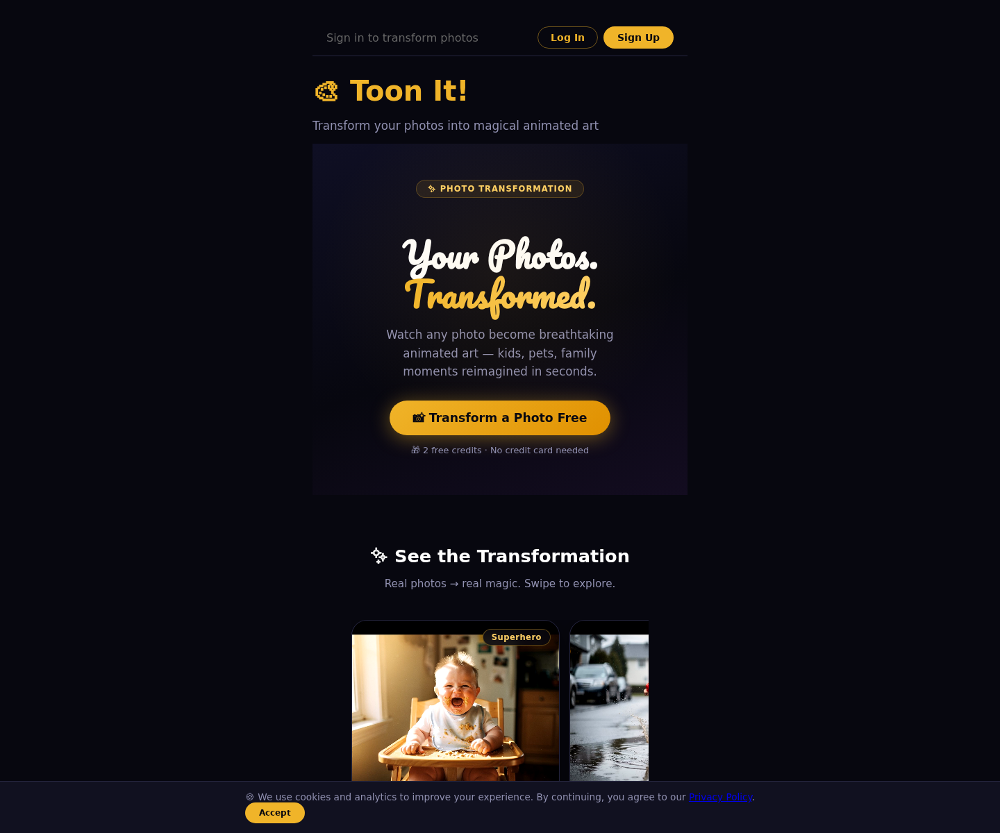
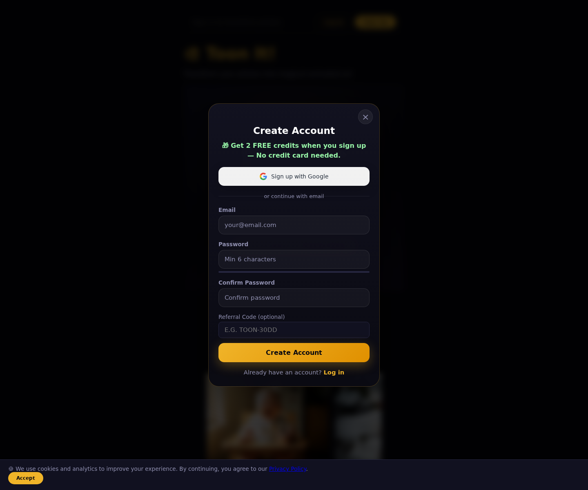
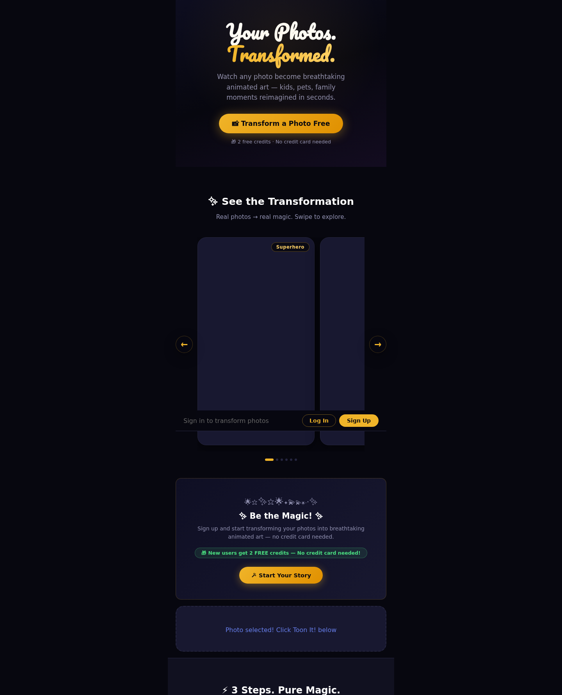
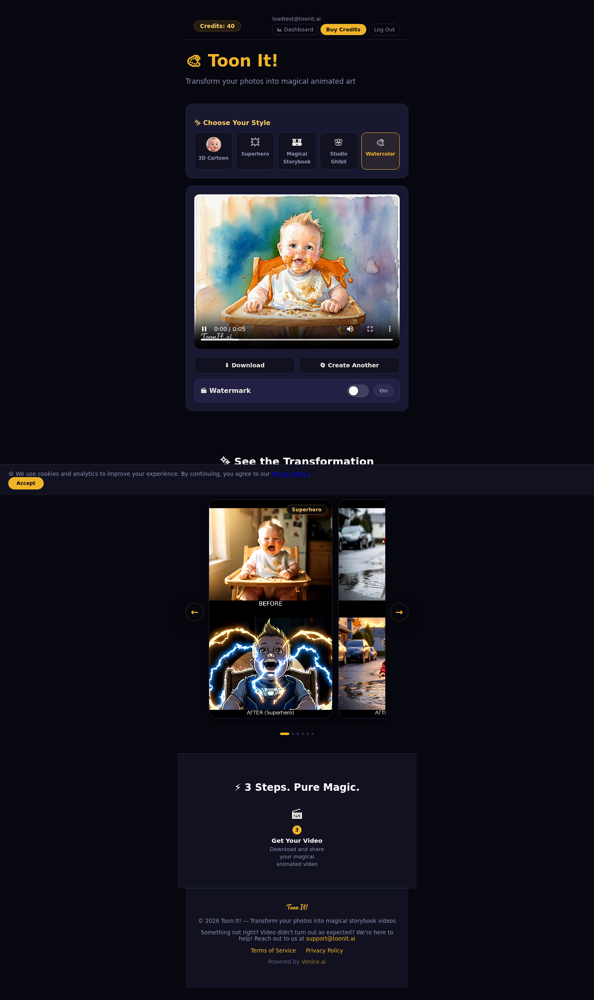
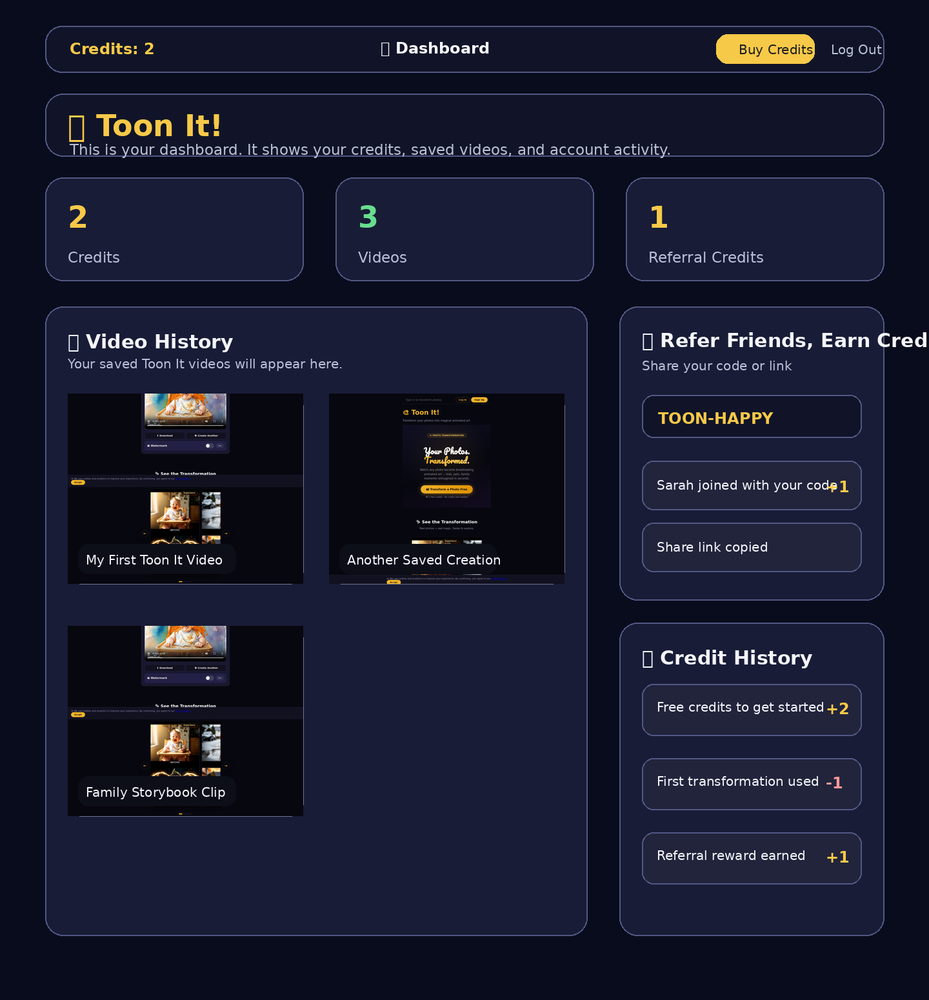
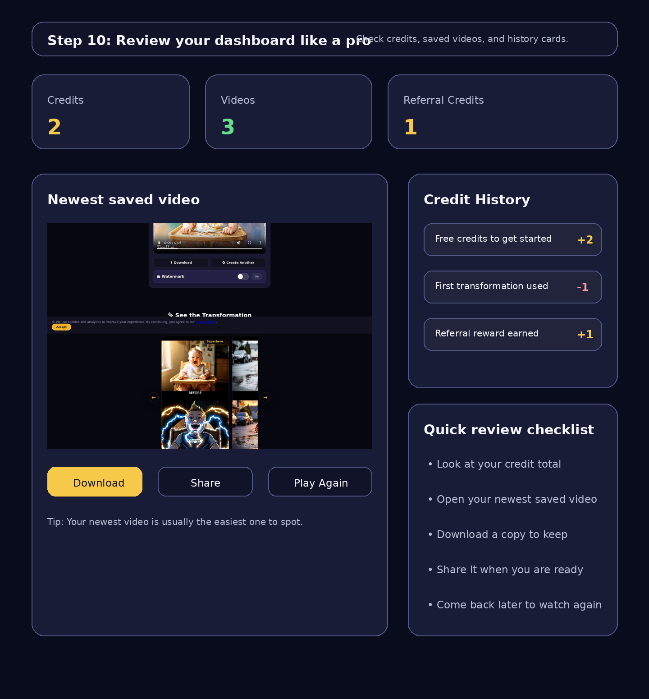

New to Toon It? This cheerful guide is for older folks, parents helping young kids, and anyone who wants simple instructions in plain English. We will show you exactly how to sign up, upload a photo, make your first transformation, and check your dashboard when you are done.
Published March 9, 2026 · About 4 minutes to read
What you will do
Create your Toon It account
Sign in with email or Google
Upload your first photo
Start your first transformation
Watch your finished result
Open your dashboard to review your videos and credits
Good news: You do not need to be “good with computers” to do this. If you can click a button and choose a photo, you can use Toon It.
Before you begin
You need a photo Pick a clear photo from your phone, tablet, or computer.
You need internet A steady connection helps your upload finish smoothly.
You need a few quiet minutes Your transformation can take a little time while Toon It works its magic.
Step-by-step: your first Toon It experience
1
Go to Toon It
Open your web browser and go to toonit.ai. When the page loads, look for the sign up or login area near the top of the page.

What to look for: the Toon It home page, plus the Log In and Sign Up buttons near the top.
Email sign up: Type your email address and create a password.
Google sign up: Click the Google option and choose your Google account.
If you like the fastest option, Google is usually the quickest. If you prefer to keep things simple and separate, email sign up works great too.

Easy start: you can create an account with Google or with your email address.
3
Finish your account setup
If you signed up with email, type your information carefully and click the sign up button. After that, check your inbox. Toon It may send you a confirmation email. If it does, open that email and click the confirmation link.
If you signed up with Google, you may go straight into your account after choosing your Google profile.
Helpful tip: If you do not see the email, check your spam or junk folder too.
After you sign up: if you use email, check your inbox for a confirmation message before you continue.
4
Log in and get ready
Once your account is ready, log in if Toon It does not sign you in automatically. After you are logged in, you should return to the main page where you can upload a photo and begin your first transformation.

Once you are in: this is the main create area where you upload a photo and begin.
5
Upload your first photo
Find the photo upload area on the page. Click the upload button or photo box, then choose a picture from your device.
For your first try, a good photo is:
bright and easy to see
not blurry
focused on the person, child, pet, or moment you want to transform
Good first photo: use a bright, clear picture that is easy to see.
6
Start your first transformation
After your photo appears on the page, click the main action button to start the transformation. This is the button that tells Toon It to begin making your magical cartoon-style video.
Once you click it, Toon It starts working in the background. You do not need to do anything tricky here. Just give it a little time.
Think of it like this: you give Toon It the photo, and Toon It does the artistic part for you. Easy peasy.
Ready to go: once your photo appears here, use the main transform button to begin.
7
Wait while Toon It works its magic
Your transformation is not instant, so do not worry if it takes a little while. The site may show a loading message or progress state while your result is being made.
This is a perfect time to sip some tea, pet the cat, or tell a child, “The magic is loading.”
While you wait: stay on this screen and give Toon It a little time to work its magic.
8
Watch your finished result
When the transformation is done, your new animated result should appear on the page. Take a moment to watch it. This is the fun part!
If you like what you see, you can usually download it, save it, or share it, depending on the options shown on your screen.

Fun part: your finished result appears here, along with buttons to download, share, or create another one.
9
Open your dashboard
Next, go to your Dashboard. This is your personal Toon It space. It helps you keep track of what you have made.
On your dashboard, you may see things like:
your available credits
your finished videos
your recent transformations
download options for saved results

Your dashboard: this is where you can review credits, videos, and account activity.
10
Review your dashboard like a pro
Here is the easiest way to review your dashboard:
Look at your credits: This tells you how many transformations you can still make.
Look for your newest video: Your latest creation should be easy to spot.
Play it again: Tap or click it if you want another look.
Download it: Save a copy to your phone or computer if you want to keep it forever.
Come back later: Your dashboard is the best place to revisit your Toon It creations.

Quick review: look for your credits, saved videos, and history cards when you want to check your progress.
Simple tips for a happy first try
Use a clear photo with good lighting.
Stay on the page while your first transformation is running.
If something seems slow, give it another minute before clicking again.
If you are helping a child, let them choose the photo. That makes it extra fun.
If you are helping an older family member, walk one step at a time and keep the screen uncluttered.
If something goes wrong
Do not panic. Most little hiccups are easy to fix.
Did not get the email? Check spam or junk.
Photo will not upload? Try a smaller or clearer picture.
Transformation feels slow? Wait a bit longer and refresh only if needed.
Cannot find your result? Open the dashboard and check your newest saved item.
You did it 🎉
Your first Toon It experience is really this simple: sign up, upload a photo, click to transform it, and check your dashboard when it is done.
That is it. No confusing steps. No special tech skills. Just one photo, a little magic, and a fun result you can enjoy again later.
Ready to try it? Head over to toonit.ai and make your first transformation.
This guide is written in plain English for first-time users and now includes real screenshots to make setup even easier.